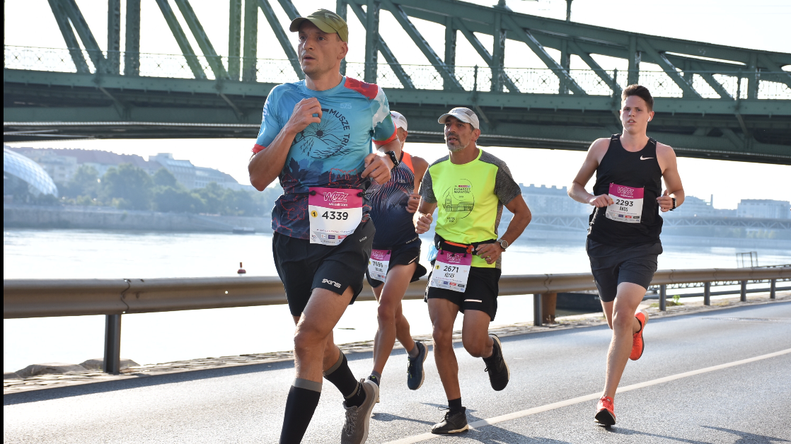
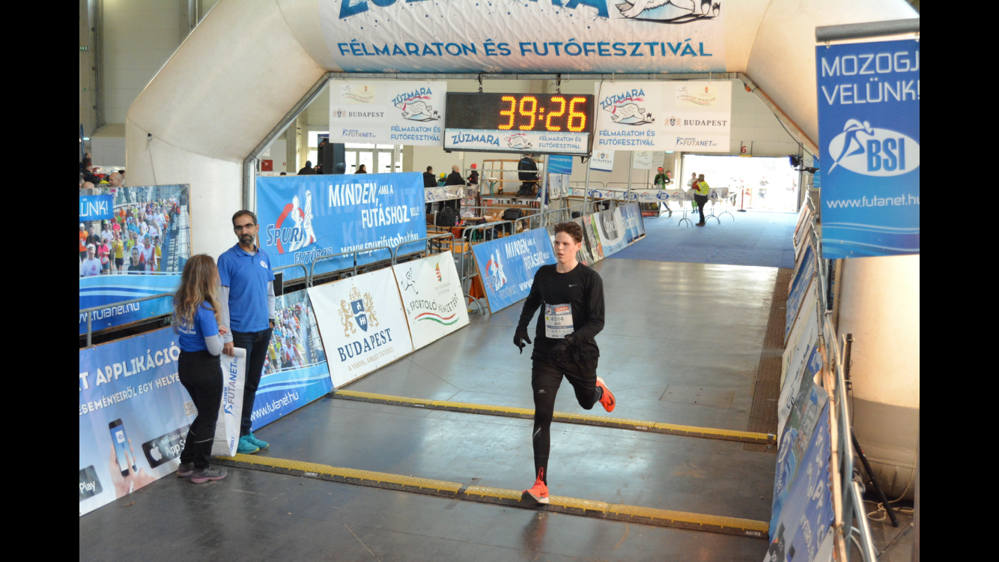
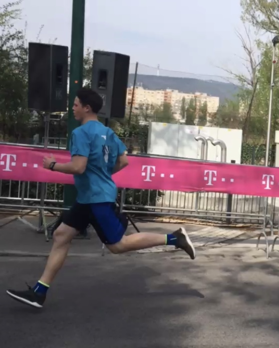

Néhány versenyemről:
A futóversenyeken való részvétel egy nagyszerű dolog, nem csak azoknak, akik a mezőny elején futnak. Annak az érzete, hogy valamire felkészülsz és teljesíted, remek érzés. Előfordul azonban olyan is, hogy egy-egy verseny nem úgy sikerül, ahogyan szeretné a futó, azonban ez csak arra ösztönzi, hogy még keményebben edzen, hogy elérje a kitűzött célt.
Ha kedvet kaptál a versenyekhez, akkor ide kattintva tudsz nevezni néhányra Magyarországon.

Ez a kép a 2020-as Wizz Air Budapest Félmaratonon készült, ami az országos bajnokság is volt egyben és az U20-as kategóriában 5. lettem

Ez a kép 2020 januárjában késztült, a Zúzmara Félmaratonon, amin az 5+10 km-es versenyszámban 2. lettem

Mint sok más sport, a futás sem csak az egyéni számokról szól. Én személy szerint szívesebben futok váltóban. Ez a kép is egy váltóversenyen készült, a Telekom Vivicitta 3x2 km-es versenyén.